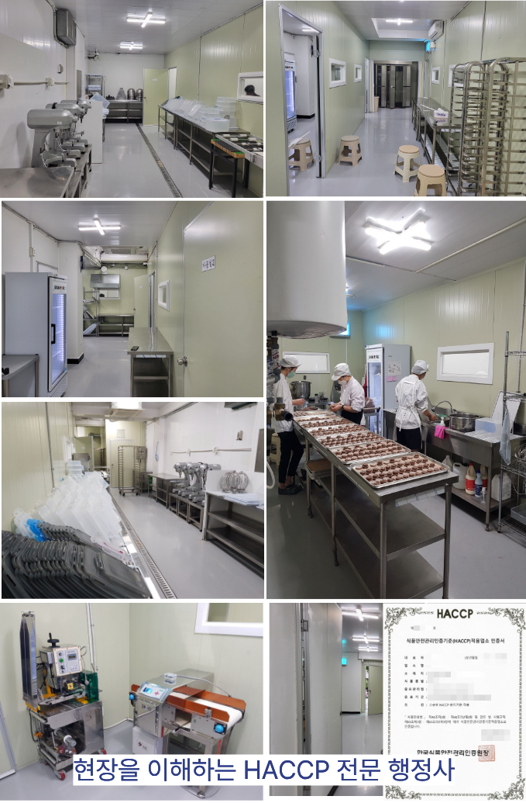

식품·축산물 공장 인허가부터 HACCP까지,
시설기준 검토부터 함께 준비합니다
공장계약 전 용도확인과 시설기준검토를 먼저 진행하면 불필요한 공사와 보완을 줄일 수 있습니다. 식품제조가공업 등록, 축산물가공업 허가, HACCP 인증(해썹컨설팅)까지 실무 절차에 맞춰 대표 행정사가 직접 진행합니다.
업무 분야 보기 →식품·축산물 인허가와 HACCP,
사업에 맞춰 준비합니다
업종에 따라 필요한 인허가와 HACCP이 다릅니다. 사업장 상황에 맞춰 순서대로 준비해 드립니다.
공장 계약 전에는 건축물대장상 용도를 확인해 해당 장소에서 원하는 업종의 영업이 가능한지부터 확인합니다. 이후 필요한 경우 시설기준과 작업장 구조를 검토해 계약과 시설공사 단계로 이어갑니다.
용도확인부터 허가, HACCP 준비까지
아래 5단계로 진행하며, 공장계약 전 확인 절차부터 함께합니다.

김대운 행정사
10년 이상 식품·축산물 인허가 및 HACCP 인증 업무를 담당해 온 김대운 행정사가 상담부터 허가 완료까지 직접 진행합니다. 담당자가 중간에 바뀌지 않기 때문에, 초기 상담에서 파악한 현장 상황이 그대로 이어져 진행됩니다.
현장 중심 실무
서류상 검토가 아니라 실제 제조 공정과 작업장 동선을 직접 확인하고 반영합니다.
공사 전 사전 확인
계약 전 건축물 용도와 인허가 가능 여부를 먼저 확인해 불필요한 시행착오를 줄입니다.
대표 직접 상담
상담부터 허가 완료까지 대표 행정사가 직접 담당해 진행 상황을 바로 확인할 수 있습니다.
허가 이후 사후관리
허가·인증 취득 이후 운영 단계까지 고려한 사후관리를 함께 안내합니다.
인허가·HACCP 인증 완료 사례
개인정보를 마스킹 처리한 실제 인허가증·인증서입니다. 전체 사례는 성공사례 페이지에서 지역·업종별로 확인할 수 있습니다.



이런 업종도 함께 검토합니다
식품제조가공업·축산물가공업 외에도 아래 업종의 인허가·신고 절차를 대행합니다. 업종별 자세한 내용은 업무 분야 페이지에서 확인할 수 있습니다.
즉석판매제조가공업
직접 최종소비자에게 판매하는 업종의 신고 절차를 검토합니다.
식육포장처리업
포장육 취급 업종의 허가 기준과 시설 요건을 안내합니다.
식품소분업
완제품을 소분·재포장해 판매하는 업종의 절차를 대행합니다.
식육판매업 등
축산물 판매·보관 등 그 밖의 인허가·신고도 대행합니다.
지엘행정사 사무소에 대해
자주 묻는 질문
아래에서 해결되지 않는 점은 전화 또는 카카오톡으로 문의해 주세요.
인허가·HACCP 인증, 지금 상담받으세요
아래 양식으로 상담을 신청하시면 내용을 먼저 검토한 뒤 연락드립니다. 전화, 카카오톡으로도 바로 문의하실 수 있습니다.